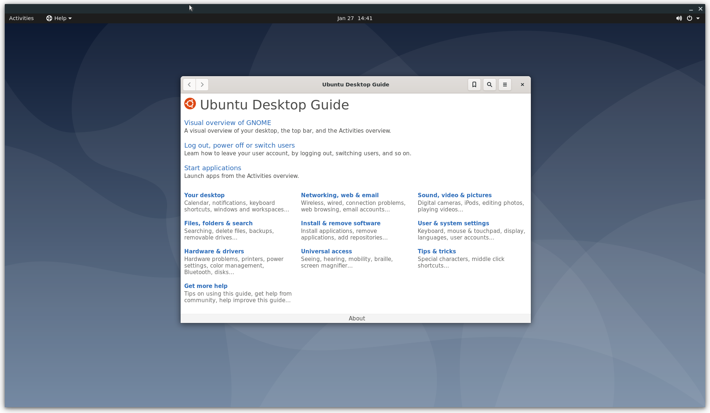

Example Usage
This section will explain how to use a prebuilt Ubuntu image as the guest OS. If you want to prepare a kernel and rootfs by yourself, please see Building crosvm.
The example code for this guide is available in tools/examples
Run a simple Guest OS (using virt-builder)
To run a VM with crosvm, we need two things: A kernel binary and a rootfs. You can build those yourself or use prebuilt cloud/vm images that some linux distributions provide.
Preparing the guest OS image
One of the more convenient ways to customize these VM images is to use virt-builder from the
libguestfs-tools package.
# Build a simple ubuntu image and create a user with no password.
virt-builder ubuntu-20.04 \
--run-command "useradd -m -g sudo -p '' $USER ; chage -d 0 $USER" \
-o ./rootfs
Extract the Kernel (And initrd)
Crosvm directly runs the kernel instead of using the bootloader. So we need to extract the kernel binary from the image. virt-builder has a tool for that:
virt-builder --get-kernel ./rootfs -o .
The kernel binary is going to be saved in the same directory.
Note: Most distributions use an init ramdisk, which is extracted at the same time and needs to be passed to crosvm as well.
Launch the VM
With all the files in place, crosvm can be run:
# Run crosvm without sandboxing.
# The rootfs is an image of a partitioned hard drive, so we need to tell
# the kernel which partition to use (vda5 in case of ubuntu-20.04).
cargo run --no-default-features -- run \
--disable-sandbox \
--rwdisk ./rootfs \
--initrd ./initrd.img-* \
-p "root=/dev/vda5" \
./vmlinuz-*
The full source for this example can be executed directly:
./tools/examples/example_simple
Add Networking Support
Networking support is easiest set up with a TAP device on the host, which can be done with:
./tools/examples/setup_network
The script will create a TAP device called crosvm_tap and sets up routing. For details, see the
instructions for network devices.
With the crosvm_tap in place we can use it when running crosvm:
# Use the previously configured crosvm_tap device for networking.
cargo run -- run \
--disable-sandbox \
--rwdisk ./rootfs \
--initrd ./initrd.img-* \
--tap-name crosvm_tap \
-p "root=/dev/vda5" \
./vmlinuz-*
To use the network device in the guest, we need to assign it a static IP address. In our example guest this can be done via a netplan config:
# Configure network with static IP 192.168.10.2
network:
version: 2
renderer: networkd
ethernets:
enp0s4:
addresses: [192.168.10.2/24]
nameservers:
addresses: [8.8.8.8]
gateway4: 192.168.10.1
Which can be installed when building the VM image:
builder_args=(
# Create user with no password.
--run-command "useradd -m -g sudo -p '' $USER ; chage -d 0 $USER"
# Configure network via netplan config in 01-netcfg.yaml
--hostname crosvm-test
--copy-in "$SRC/guest/01-netcfg.yaml:/etc/netplan/"
# Install sshd and authorized key for the user.
--install openssh-server
--ssh-inject "$USER:file:$HOME/.ssh/id_rsa.pub"
-o rootfs
)
virt-builder ubuntu-20.04 "${builder_args[@]}"
This also allows us to use SSH to access the VM. The script above will install your
~/.ssh/id_rsa.pub into the VM, so you'll be able to SSH from the host to the guest with no
password:
ssh 192.168.10.2
The full source for this example can be executed directly:
./tools/examples/example_network
Add GUI support
First you'll want to add some desktop environment to the VM image:
builder_args=(
# Create user with no password.
--run-command "useradd -m -g sudo -p '' $USER ; chage -d 0 $USER"
# Configure network. See ./example_network
--hostname crosvm-test
--copy-in "$SRC/guest/01-netcfg.yaml:/etc/netplan/"
# Install a desktop environment to launch
--install xfce4
-o rootfs
)
virt-builder ubuntu-20.04 "${builder_args[@]}"
Then you can use the --gpu argument to specify how gpu output of the VM should be handled. In this
example we are using the virglrenderer backend and output into an X11 window on the host.
# Enable the GPU and keyboard/mouse input. Since this will be a much heavier
# system to run we also need to increase the cpu/memory given to the VM.
# Note: GDM does not allow you to set your password on first login, you have to
# log in on the command line first to set a password.
cargo run --features=gpu,x,virgl_renderer -- run \
--cpus 4 \
--mem 4096 \
--disable-sandbox \
--gpu backend=virglrenderer,width=1920,height=1080 \
--display-window-keyboard \
--display-window-mouse \
--tap-name crosvm_tap \
--rwdisk ./rootfs \
--initrd ./initrd.img-* \
-p "root=/dev/vda5" \
./vmlinuz-*

The full source for this example can be executed directly (Note, you may want to run setup_networking first):
./tools/examples/example_desktop